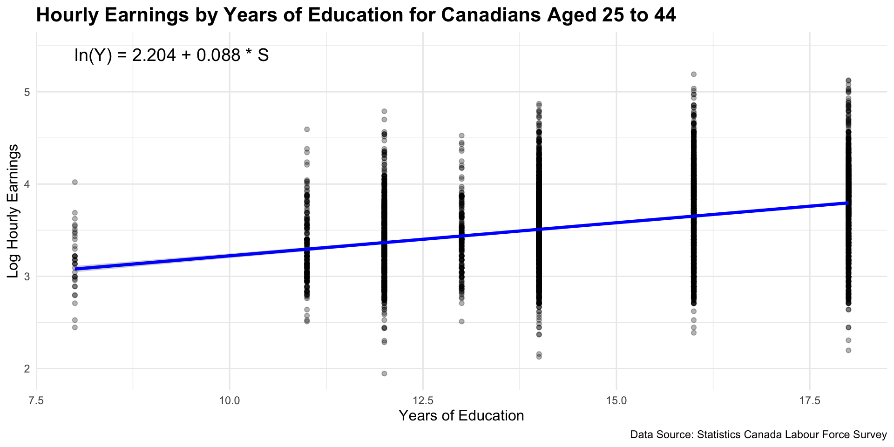

| Men | Women | |
|---|---|---|
| 0–8 years | -0.125 (0.019) | -0.178 (0.024) |
| Some high school | -0.073 (0.010) | -0.103 (0.012) |
| Some postsecondary | 0.065 (0.012) | 0.076 (0.012) |
| Postsecondary certificate | 0.163 (0.007) | 0.141 (0.007) |
| Bachelor’s degree | 0.296 (0.008) | 0.366 (0.007) |
| Graduate degree | 0.397 (0.009) | 0.485 (0.009) |
| Num.Obs. | 28560 | 28320 |
| R2 | 0.268 | 0.296 |
| RMSE | 0.40 | 0.37 |
Human Capital Theory
EC306- Wages and Employment
Justin Smith
Wilfrid Laurier University
Fall 2025

Goals of This Section
Goals of This Section
Discuss trends in educational attainment in Canada
Introduce Human Capital Theory of education investment
Introduce Signalling Model of education investment
Discuss empirical methods to estimate returns to schooling
Review empirical evidence on returns to schooling
Discuss job training
Introduction
Educational Attainment

Unemployment Rate

Participation Rate

Human Capital Theory
Human Capital Theory
- Firms often invest in physical capital (e.g., machines, tools, buildings)
- Incur some cost today to invest in capital
- Boosts the productive ability of workers
- Increases the output flow in the future
- Incur some cost today to invest in capital
- Decision to invest is made by comparing costs to benefits
- Invest if benefits outweigh costs
- Costs are usually upfront, while benefits occur slowly over time
- Invest if benefits outweigh costs
Human Capital Theory
- Individuals make similar investments in human capital
- Human Capital: An individual’s stock of productive skills, knowledge, and abilities
- People incur upfront costs for education, training, etc.
- Training improves productivity, and therefore income
- Individuals earn higher income streams in the future
- Human Capital: An individual’s stock of productive skills, knowledge, and abilities
- We will study investments in human capital in a similar way to physical capital
Human Capital Theory
Human capital investments involve some special considerations
- Non-wage benefits
- Consumption value
- Differences in risk of unemployment in downturns
- It is more difficult to finance education investments
- No collateral
- Non-wage benefits
Social versus private costs/benefits
- Private costs and benefits are specific to the individual
- But there may be social costs and benefits as well
- E.g., positive externalities from education
Private Investments In Education
Introduction
The human capital investment decision boils down to comparing lifetime income streams
- Different streams of income are associated with different levels of schooling
- Higher levels of schooling usually lead to higher income streams
- Different streams of income are associated with different levels of schooling
We will outline a process to decide which stream to choose
To make the model tractable, we assume:
- No direct utility or disutility from schooling
- Hours of work are held fixed
- Certainty of income streams
- Individuals can borrow and lend at interest rate \(r\)
Attending University
Suppose we want to analyze whether it is financially worthwhile to attend university
- Start from the perspective of an 18-year-old high school graduate
- This student is deciding whether or not to attend university
- Students who do not attend university move immediately into the workforce
- Start from the perspective of an 18-year-old high school graduate
The graph on next slide depicts two income streams:
- Black line: university path
- Blue line: high school path
- Red and yellow: costs of attending university
- Green: benefits of university education
- Black line: university path
Attending University

- Direct costs are in red
- Books, fees, tuition
- Foregone wages are in yellow
- Income not earned during the time in university
- Net gains in wages are in green
- Earnings of university grad above a high school grad
- Beneficial to attend if present value of green exceeds present value of yellow plus red
Attending University
People will choose the level of schooling that maximizes the net present value of lifetime earnings
We illustrated that graphically above
Mathematically, express the present value of earnings for a high school graduate as
\[PV = \frac{Y}{(1+r)^0} + \frac{Y}{(1+r)^1} + \ldots + \frac{Y}{(1+r)^{T-18}}\]
In this equation
- \(Y\) = annual earnings of high school graduate
- \(r\) = interest rate
- \(T\) = expected retirement age
Attending University
- We can approximate the present value of earnings for a high school graduate as
\[PV \approx Y + \frac{Y}{r} \]
Approximation works if \(T\) is long enough
Now consider a person who attends one year of university
They incur direct costs \(D\) in the first year and earn no income in that year
Every year they work, they gain an amount \(\Delta Y\) above the high school graduate
Attending University
- Their income stream is
\[PV^* = \frac{-D}{(1+r)^0} + \frac{Y + \Delta Y}{(1+r)^1} + \ldots + \frac{Y + \Delta Y}{(1+r)^{T-18}}\]
- This can be approximated as
\[PV^* \approx -D + \frac{Y + \Delta Y}{r} \]
- The net present value of attending this additional year of university is
\[NPV = PV^* - PV \approx -(D + Y) + \frac{\Delta Y}{r} \]
Attending University
The term \(D + Y\) is the marginal cost of attending university for one year
The term \(\frac{\Delta Y}{r}\) is the marginal benefit of attending university for one year
Attending university for one year is worthwhile if
\[NPV > 0 \implies \frac{\Delta Y}{r} > D + Y \]
- A person will continue to attend more years of schooling until \(MB = MC\), or
\[ \frac{\Delta Y}{r} = D + Y \]
Attending University

Graph on left illustrates optimal schooling decision
Marginal benefit curve is downward sloping
- Each additional year of schooling yields a smaller increase in wages
Marginal cost curve is upward sloping
- Each additional year of schooling incurs higher direct costs, foregone wages, psychic costs
Optimum is where MB = MC
Attending University
Another way to look at the schooling decision is through the rate of return to schooling
This method uses the concept of the internal rate of return (IRR)
The IRR is the interest rate that makes the NPV of an investment equal to zero
In our setup, the IRR is the interest rate that satisfies
\[ 0 = -(D + Y) + \frac{\Delta Y}{IRR} \]
- Rearranging gives
\[ IRR = \frac{\Delta Y}{D + Y} \]
- The IRR is the percentage return on the investment in schooling
Attending University
The alternative to attending university is to invest the money \(D + Y\) at the market interest rate \(r\)
- Opportunity cost of investing in schooling is \(r\)
If the IRR exceeds \(r\), then investing in schooling is worthwhile
A person would continue to attend more years of schooling until
\[ IRR = r \implies \frac{\Delta Y}{D + Y} = r \]
Attending University

Graph on left illustrates alternative optimal schooling decision
Market interest rate is \(r\)
Internal rate of return IRR is decreasing in schooling
- Each additional year of schooling yields a smaller increase in wages
Optimum is where IRR = r
Yields same optimal schooling level as previous method
Comparative Statics
We can use this framework to see how changes in parameters and policies affect schooling decisions
Suppose the direct costs \(D\) of attending university decrease
- E.g., government introduces tuition subsidies
- This decreases the marginal cost of schooling
- Leads to an increase in optimal schooling level
Suppose the market interest rate \(r\) decreases
- E.g., due to monetary policy
- This increases the present value of future earnings
- Leads to an increase in optimal schooling level
Comparative Statics
What if the income tax system becomes more progressive?
- Higher taxes on high income earners
- Decreases the after-tax increase in earnings \(\Delta Y\)
- Leads to a decrease in optimal schooling level
Suppose the pay for jobs in the oil sector increases substantially
- E.g., due to a boom in oil prices
- Increases the earnings of high school graduates \(Y\)
- Leads to a decrease in optimal schooling level
Complications
Information asymmetries
- Students may not know the true costs and benefits of schooling
- May lead to under- or over-investment in schooling
Disutility of schooling
- Students may dislike attending school
- This adds to the marginal cost of schooling
Different degrees have different returns
- Some fields of study lead to higher earnings than others
- Students must choose not only how much schooling, but what type
Complications
A major complication is financing/credit constraints
- Many students cannot afford the upfront costs of schooling
- May not be able to borrow against future earnings
- Leads to under-investment in schooling compared to optimal level
Signalling
Introduction
- In the Human Capital model, there are key assumptions that make the model work:
- Education increases productivity
- Productivity is perfectly observed by employers
- Wages are paid according to productivity
- Education increases productivity
- The signalling model emphasizes an alternative view:
- Education may not increase productivity
- Instead, it reveals productivity to employers
- It acts as a signal of worker ability
- People only invest in education to signal their ability to employers
Model
The basics of the model are
- Employers do not observe productivity until after a worker is hired
- Employees know their own ability but find it difficult to credibly reveal it to employers
- Without knowing productivity, firms pay employees according to average productivity in the population
- Under certain conditions, obtaining education can serve as a signal of productivity, allowing workers to be paid accordingly
- Employers do not observe productivity until after a worker is hired
Model
- For education to actually be informative about ability:
- It must be costly to acquire
- It must be sufficiently more costly for low-ability individuals than for high-ability individuals
- Otherwise, low-ability workers might find it profitable to fake high ability by acquiring education
- Otherwise, low-ability workers might find it profitable to fake high ability by acquiring education
- Employers’ beliefs must be confirmed in the future
- Otherwise, they will update their wage offers
- It must be costly to acquire
- Given the conditions above, education helps solve an information problem:
- It correctly reveals ability through educational attainment
- High- and low-ability workers are then correctly paid according to their productivity
- It correctly reveals ability through educational attainment
Model
Below we do a more formal treatment of the model
Assume that:
There are two types of workers: low ability (L) and high ability (H)
A fraction \(q\) are Type L, and \((1 - q)\) are Type H
For Type L workers:
- Cost of education: \(c_L(s) = s\)
- Marginal Product (MP): \(1\)
- Cost of education: \(c_L(s) = s\)
For Type H workers:
- Cost of education: \(c_H(s) = \frac{s}{2}\)
- Marginal Product (MP): \(2\)
- Cost of education: \(c_H(s) = \frac{s}{2}\)
Model
Employees know their own ability, but employers do not
Employers instead form beliefs about employee ability based on observed education levels
What would happen if there were no way to signal ability?
Firms would have no way of knowing who is high or low ability
- So they offer everyone the same wage.
The wage equals the average productivity:
\[\bar{w} = 1 \cdot q + 2 \cdot (1 - q) = 2 - q\]
Model
Example: 50% Low-Ability Workers
- If 50% of the population are low ability \(( q = 0.5)\):
\[\bar{w} = 2 - q = 1.5\]
Recall that
- Type L workers produce \(MP = 1\)
- Type H workers produce \(MP = 2\)
- Type L workers produce \(MP = 1\)
Therefore:
- Type L is paid more than they produce
- Type H is paid less than they produce
- On average, total pay equals total production
- Type L is paid more than they produce
Model
Suppose employers observe education
They form beliefs about how it relates to ability, and pay according to those beliefs.
One possible set of employer beliefs:
- Workers with education \(s > s^*\) are Type H
- Workers with education \(s \le s^*\) are Type L
- \(s^\) is some cutoff level of education
- Workers with education \(s > s^*\) are Type H
Firms pay wages according to the believed type:
\[w = \begin{cases} 2, & \text{if } s > s^* \\ 1, & \text{if } s \le s^* \end{cases}\]
Model
- In this model, workers decide how much education to acquire.
- A worker of type ( t ) maximizes utility:
\[ U_t(s) = w(s) - c_t(s) \]
- All workers can obtain \(U_t(s) = 1\) by acquiring no education.
- Therefore, the payoff to acquiring any education must satisfy \(U_t(s) \ge 1\)
- Workers will never find it useful to obtain more than \(s^*\) years of education.
- Doing so increases costs without increasing payoffs.
- Doing so increases costs without increasing payoffs.
- Thus, the decision is binary: either 0 or \(s^*\) years of education.
Model
- Type H Workers
\[ U_H(0) = w(0) - c_H(0) = 1 - 0 = 1 \]
\[ U_H(s^*) = w(s^*) - c_H(s^*) = 2 - \frac{s^*}{2} \]
- A Type H worker will acquire \(s^*\) years of education if:
\[ U_H(s^*) > U_H(0) \]
\[ 2 - \frac{s^*}{2} > 1 \]
\[ s^* < 2 \]
Model
- For Type L Workers
\[ U_L(0) = w(0) - c_L(0) = 1 - 0 = 1 \]
\[ U_L(s^*) = w(s^*) - c_L(s^*) = 2 - s^* \]
- A Type L worker will acquire \(s^*\) years of education if:
\[ U_L(s^*) > U_L(0) \]
\[ 2 - s^* > 1 \]
\[ s^* < 1 \]
Model
- If \(s^* < 1\):
- Both Type L and Type H acquire education \(s^*\)
- The signal is not informative
- If \(s^* > 2\):
- Both Type L and Type H acquire no education
- The signal is not informative
- Both Type L and Type H acquire no education
- If \(1 < s^* < 2\):
- Type H obtains education \(s^*\)
- Type L obtains no education
- Education reveals worker type
- Type H obtains education \(s^*\)
Model
Equilibrium
Occurs when \(s^*\) lies between 1 and 2.
- This is an equilibrium because the beliefs based on this strategy are correct
- A firm can only maintain beliefs if they are validated by observed behaviour
- This is an equilibrium because the beliefs based on this strategy are correct
Any \(s^*\) between 1 and 2 will satisfy equilibrium conditions
- The equilibrium with the highest welfare is the one closer to \(s^* = 1\)
This is called a separating equilibrium.
- When everyone gets the same level of education, it is a pooling equilibrium.
- The case where there is no education signal is one example of a pooling equilibrium.
- When everyone gets the same level of education, it is a pooling equilibrium.
Model

Model
Sometimes everyone is worse off under the separating equilibrium:
Recall inn the pooling equilibrium, nobody gets education.
- Everyone is paid \(\bar{w} = 2 - q\)
Under the separating equilibrium:
- Type L are paid $1 — they are worse off unless \(q = 1\)
- Type H are paid \(2 - \frac{s^*}{2}\) — they are worse off unless \(2 - q > 2 - \frac{s^*}{2} \rightarrow s^* > 2q\)
- Type L are paid $1 — they are worse off unless \(q = 1\)
In our previous example where \(q = 0.5\)
- Type H individuals are worse off for any \(s^* > 1\)
Model
Key Ideas of the Signalling Model
Depending on firm beliefs about the relationship between education and ability, it may be worthwhile to acquire education.
There must be a difference in the cost of acquiring education for high- and low-ability workers.
If firms’ beliefs are not confirmed, they are not sustainable in equilibrium.
Estimating Returns to Schooling
Introduction
We studied two theories of private education investment
- These theories explain why individuals might invest in education
Empirical economists estimate the size of the return using data
We will study how empirical economists approach estimation
- Mostly based on the Human Capital Earnings Function
We then discuss results from existing research
- Rates of return to additional education are large
- Some evidence they are rising over time
- Returns are mostly attributed to human capital, but there is some evidence of signalling effects
- Rates of return to additional education are large
The Human Capital Earnings Function
- Most estimates of the return to education are based on variations of the Human Capital Earnings Function (also known as the Mincer Equation)
\[\ln Y = \beta_0 + \beta_1\,schl + \beta_2\,exp + \beta_3\,exp^{2} + \epsilon\]
- The variables are
- \(Y\) is some measure of earnings, income, or wages
- \(schl\) is years of schooling
- \(exp\) is potential experience
- \(exp = age - schl - 5\)
- Used because actual experience is not always observed
- \(exp = age - schl - 5\)
- \(Y\) is some measure of earnings, income, or wages
The Human Capital Earnings Function
The Mincer equation uses the natural logarithm of \(Y\) as the dependent variable
When we use the natural log of the dependent variable, coefficients measure the percent change in the dependent variable per unit change in the independent variable
\[\beta_{1} = \frac{\partial \ln Y}{\partial schl}\]
\[= \frac{\partial \ln Y}{\partial Y} \cdot \frac{\partial Y}{\partial schl}\]
\[= \frac{1}{Y} \cdot \frac{\partial Y}{\partial schl}\]
This is the percent change in \(Y\) per additional year of schooling
\(\beta_{1}\) is interpreted as the IRR
- The percent change in yearly earnings per additional year of schooling
The Human Capital Earnings Function
One way to estimate this equation is to use Ordinary Least Squares (OLS) regression
There are two main data sources in Canada for this
- The Canadian Census
- Large sample sizes
- Detailed information on education and income
- Only conducted every 5 years
- Large sample sizes
- The Labour Force Survey (LFS)
- Monthly survey
- Smaller sample sizes
- Less detailed information on education and income
- Monthly survey
- The Canadian Census
The Human Capital Earnings Function

The Human Capital Earnings Function
Graph above shows data on schooling and hourly earnings from the LFS in September 2025 (black dots)
Also shows the fitted OLS regression line (blue line)
There is a clear positive relationship between schooling and earnings
Issues with this graph
Does not control for experience
Education data not actually stored in years of schooling
- Actually stored in categories (e.g., high school graduate, some university, university degree)
- I converted categories to approximate years
The Human Capital Earnings Function
The more accurate way is to
Run the full Mincer equation regression
- Control for experience or age
Use categorical education variables instead of years of schooling
- Need to omit one group
- This forms the “reference category”
- Coefficients on the education categories measure the percent difference in earnings relative to the reference category
Slide below shows results from a Mincer equation regression using September LFS data
The Human Capital Earnings Function
Ability Bias
Major problem with estimating returns to schooling is ability bias
- Higher ability people choose more schooling but would earn higher wages even without schooling
- So OLS estimate reflects both the return to schooling and the return to ability
- Higher ability people choose more schooling but would earn higher wages even without schooling
Ability bias is thought to be positive
- Higher ability people choose more schooling on average
- This leads to overestimating the return to schooling
- Higher ability people choose more schooling on average
We can illustrate this with a model
Ability Bias
- Suppose the true earnings equation is
\[ \ln Y = \beta_{0} + \beta_1 schl + \beta_2 abil + \epsilon \]
\(s\): schooling
\(a\): ability
\(\epsilon\): other factors with \(E[\epsilon \mid s, a] = 0\)
Assume schooling increases with ability through a linear relationship
\[ abil = \alpha_0 + \alpha_1 schl + v \]
with \(v\) uncorrelated with \(a\)
Ability Bias
- If we estimate a regression omitting ability
\[ \ln Y = \tilde{\beta}_1 schl + e \]
- The OLS coefficient on schooling equals
\[ \tilde{\beta}_s = \frac{Cov(lnY, s)}{Var(s)} \]
Ability Bias
- Plug \(\ln Y = \beta_1 schl + \beta_2 abil + \epsilon\) into formula for \(\tilde{\beta}_s\)
\[ \tilde{\beta}_s = \frac{Cov(lnY, schl)}{Var(schl)} = \frac{Cov(\beta_{0} + \beta_1 schl + \beta_2 abil + \epsilon, schl)}{Var(schl)} \]
- Because \(\beta_0\) is constant and \(\epsilon\) is uncorrelated with \(schl\)
\[ \tilde{\beta}_s = \frac{\beta_1 Var(schl) + \beta_2 Cov(abil, schl)}{Var(schl)} = \beta_1 + \beta_2 \alpha_1 \]
Ability Bias
The term \(\beta_2 \alpha_1\) is the ability bias
It depends on
- \(\beta_2\): the earnings return to ability
- \(\alpha_1\): the relationship between ability and schooling
If both terms are positive, then ability bias is positive
This means that OLS overestimates the return to schooling
- Estimates partly reflect the return to ability, partly the return to schooling
Addressing Ability Bias
Economists have developed methods to address ability bias
Twin Studies: Compare earnings of identical twins with different schooling levels
- Presumably, twins have same level of ability
- Comparing them avoids ability bias
Instrumental Variables (IV): Method that isolates variation in schooling unrelated to ability
- E.g., changes in compulsory schooling laws, proximity to university
- These changes affect schooling but are unrelated to ability
Twin Studies
Twin studies compare earnings of identical twins with different schooling levels
Ashenfelter and Rouse (1998) use data on identical twins in the US
- Attended Twins festival and collected data on schooling and earnings
- Verified it with outside data
Using OLS, they estimate a biased return to schooling of about 11% per year
Using twin differences, they estimate a return of about 7% per year
- Suggests ability bias of about 4 percentage points
Compulsory Schooling
Another method is to use changes in compulsory schooling laws as an instrument for schooling
Several US states have a minimum school leaving age
- Generally around 16 years old
Means that students born earlier in the year can leave school earlier
- Someone born in January can leave earlier than someone born in December of the same year
- Means that on average people born later in the year have more schooling
Angrist and Krueger (1991) use this variation to estimate returns to schooling
- Estimate a return of about 7-10% per year of schooling
Compulsory Schooling
Can use compulsory schooling laws in a different way
Canada has maximum school entry laws and minimum school leaving laws
- Over time, students mandated to enter school earlier and leave later
- This increases average schooling levels, unrelated to ability
Oreopoulos (2006) uses this variation to estimate returns to schooling in Canada
- Finds that an additional year of compulsory schooling increases earnings by about 7-12%
Compulsory Schooling

Signalling
All studies cited so far have attributed the returns to schooling to human capital accumulation
Some studies have attempted to separate human capital from signalling effects
Ferrer and Riddell (2002) use Canadian data to estimate credential effects
- Look at people with same years of schooling, but different credentials
- E.g., Someone with a high school diploma versus someone with same years but did not graduate
Find that obtaining the credential does matter
Social Returns to Education
Most of the discussion so far has focused on private returns to education
- Returns to individuals of obtaining more schooling
We know there are spillovers to society as a whole
- Positive externalities from education
Studies show that
- States with higher average education levels have higher earnings in excess of the private return
- The number of highly educated immiggrants in STEM has a positive effect on productivity of other workers
- More highly educated populations have lower crime rates, better health outcomes, more civic participation
Education and Inequality
Education and Inequality
Earnings inequality has increased in many countries over the past few decades
In Canada
- Rose over the 80s, 90s
- Has been stable since
A couple of different sources for this
- Returns to schooling
- Growth in inequality among people with the same level of schooling
In Canada, much of it is related to inequality within education groups
- But still partly related to returns to schooling
Education and Inequality

Education and Inequality

Education and Inequality
Why has the return to education increased?
- Skill Biased Technological Change: New technologies increase demand for skilled workers
- Increases wage premium for higher education
- Globalization: Increased trade and outsourcing
- Reduces demand for lower-skilled workers locally
- Institutional Changes: Decline in unionization, changes in labor market policies
- Negatively affects bargaining power of lower-skilled workers
- Skill Biased Technological Change: New technologies increase demand for skilled workers
Skill biased technical change is thought to be major driver in the 80s
Training
Introduction
Formal schooling is one way to develop human capital
Another important way is through job training
- ** General Training**: Skills that are useful at many firms
- ** Specific Training**: Skills that are only useful at a specific firm
Training helps develop skills that increase human capital
In this section we evaluate the economics of job training
Who Pays for Job Training
It is not uncommon for firms to pay for job training
- Some companies provide training to all employees
- Other will fund things like MBA
Under what circumstance would the firm pay versus the individual?
Differs for general versus specific training
Who Pays for Job Training
General training increases productivity at many firms
- Employees can take skills to other firms
Firms will offer higher wages to employees with general training
- Very similar to schooling
But employees fund then training themselves
- Pay for it as long as the lifetime wage increase exceeds the cost of training
Who Pays for Job Training

General training illustrated to left
Without training, employee earns wage \(W_a\)
Equals VMP without training
Employee who gets training
- Earns lower wage equal to \(VMP_t\) during training period
- After training, earns higher wage equal to \(VMP^*\)
- Training raises the productivity of the worker
Worth it for employee to get training if present value of wage increase exceeds cost of training
Who Pays for Job Training
Different for specific training
Specific training only increases productivity at one firm
- Skills not transferable to other firms
Company would pay if benefits exceed costs
- Benefits are higher productivity of employee
- Costs are wages paid during training period
Would not have to pay higher wages
- There is no competition for workers
Who Pays for Job Training
Specific training illustrated to left
Before and after training, employee earns wage \(W_a\)
Firm costs are \(W_a - VMP_t\) during training period
Firm benefits are \(VMP^* - W_a\) after training period
Worth it if the present value of benefits exceeds present value of costs
Who Pays for Job Training
Individuals and firms may also share the investment
- Happens when there is a risk of individual leaving after training
Firms pay below \(W_a\) during the training period
- But still above the VMP during the training period
Pay above \(W_a\) after training
- But below the employee’s VMP
In this way the employee and employer share the costs
Who Pays for Job Training

Shared specific training is depicted to the left
During the training period, employers pay a premium above VMP but below \(W_a\)
- Costs are shared between employer and employee
- Employee cost: earning less than \(W_a\) during training
- Employer cost: pay above VMP during training
After training, employers pay a premium above \(W_a\) but below VMP
- Benefits are shared between employer and employee
- Employee benefit: earning more than \(W_a\) after training
- Employer benefit: pay below VMP after training
Who Pays for Job Training
For illustrative purposes, we have depicted training as a one-time event
- In reality, training is often ongoing throughout a worker’s career
- Workers may receive multiple types of training at different times
- Firms may have formal training programs or informal on-the-job training
A more gradual training leads to smoother curves
- But lesson is still the same
Who Pays for Job Training

Figure depicts gradual shared training
Lesson is still the same, except
Costs gradually fall over time during training
Benefits gradually get larger
Worth it for employer and employee if benefits exceed costs
Training and Government
Governments often subsidize job training programs
- Provide funding to firms to encourage them to train workers
- Provide funding directly to individuals to help pay for training
Several rationales for public funding of training
- Positive externalities
- Individuals may underinvest in training due to credit constraints
- Imperfect information about training benefits
Some current government funding initiatives
- Canada-Ontario Job Grant funds businesses to train employees
- NPower Canada: registered charity providing tech training, funded by government
Training and Government
An active area of labour economics is evaluating the effectiveness of government training programs
- Called Program Evaluation
In some cases, people are randomly allocated to training programs
- Can compare outcomes of those who received training to those who did not
- Identifies the causal effect of training
In most cases, people self-select into training programs
- People in training and comparison groups differ in many ways besides training
- Makes it difficult to isolate the effect of training itself
Training and Government
Program evaluation uses econometric techniques to address selection issues
- Difference-in-Differences (DiD): Compare changes in outcomes over time between treatment and control groups
- Propensity Score Matching (PSM): Match individuals in treatment and control groups based on observable characteristics
- Instrumental Variables (IV): Use external factors that affect training participation but not outcomes directly
Program evaluation literature shows
- U.S. training programs have positive results for young women from poorer backgrounds
- But no effect for men
- The more successful programs emphasize human capital investment over job search assistance
Summary
Summary
Education is an investment in human capital
- Increases productivity and earnings potential
The Human Capital model explains schooling decisions based on costs and benefits
- People invest in schooling until marginal benefit equals marginal cost
The Signalling model emphasizes education as a signal of ability
- Education reveals productivity to employers
Empirical estimates of returns to schooling are around 7-10% per year
- Ability bias may lead to overestimation
Job training is another important way to develop human capital
Social Returns to Education